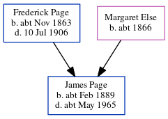

Emma Janet Eade (née Page) 1893 - c1961
[ Home ] | [ Calendar ] | [ Surnames Index ] | [ Errors ] | [ Family History ]The child of Frederick Page (a bricklayer) and Margaret Else (a charwoman), Emma Page, the third cousin once-removed on the father's side of Nigel Horne, was born in Folkestone, Kent, England on 14 Apr 18931,2,3,4,5 and baptised there at St John's Church on 19 Apr 1893. She married Frederick Eade at St James, Norlands, London, England on 27 Oct 19126. On 31 Mar 1901, she was living at 11 Park Street in Folkestone1.
She died c. Aug 1961 in Canterbury, Kent, England3,5 and was buried at Ss Mary & Ethelburga, Lyminge, Kent on 23 Sept 1961 (an overcast day)5.
Parents
- Frederick Stephen was born c. Nov 1863
- Margaret Ann was born c. 1866
Citations
- 1901 England, Wales & Scotland Census - Findmypast (was age 7 and the daughter of the head of the household)
- England & Wales births 1837-2006 - Findmypast
- England & Wales deaths 1837-2007 - Findmypast
- Kent Baptisms - Findmypast
- Kent Burials - Findmypast
- England & Wales Marriages 1837-2005 - Findmypast
Media
England & Wales births 1837-2006 - BMD/B/1893/2/AZ/000447/305
Kent Baptisms - GBPRS/CANT/B/96669443
England Births & Baptisms 1538-1975 - R_884236537
England & Wales marriages 1837-2005 - BMD/M/1912/4/AZ/000757/038
Kent Burials - GBPRS/CANT/D/95385192
England & Wales deaths 1837-2007 - BMD/D/1961/3/AZ/000249/056
Family Tree
Map
Generated by ged2site. Last updated on Jul 3, 2024
Known Issues
1939 UK register information missing